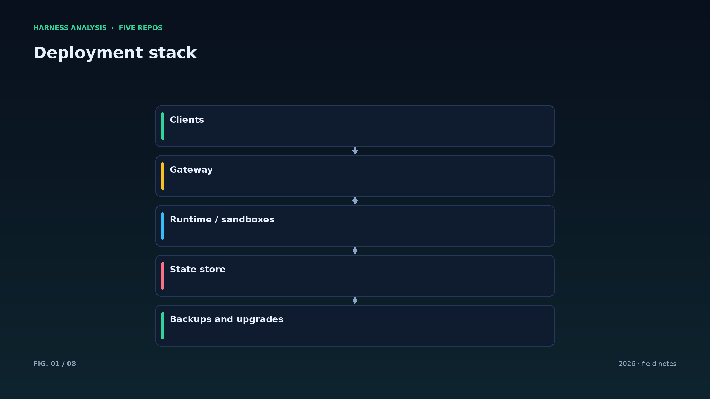
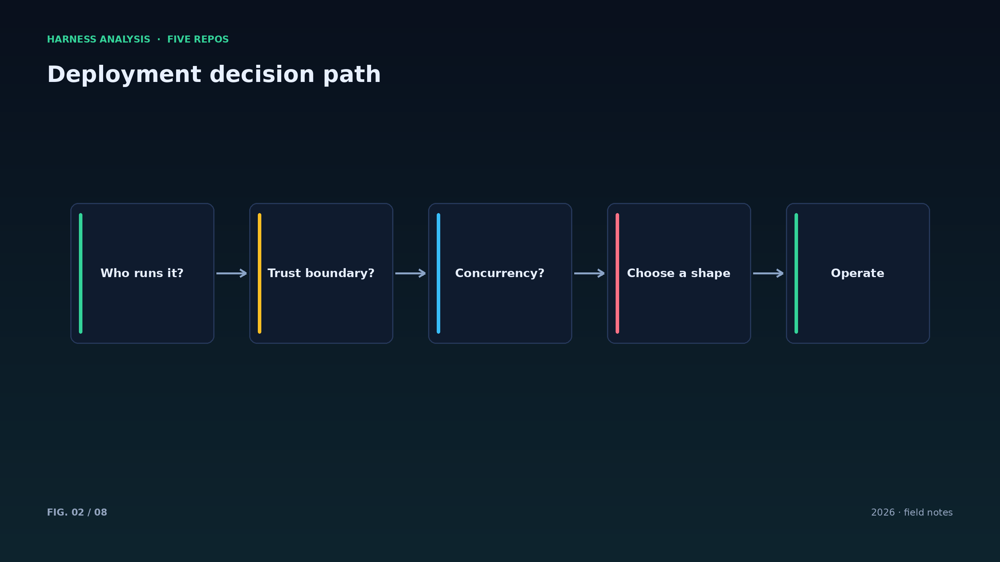
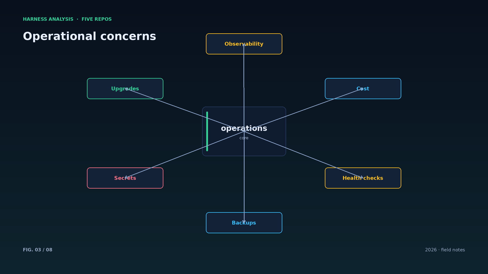
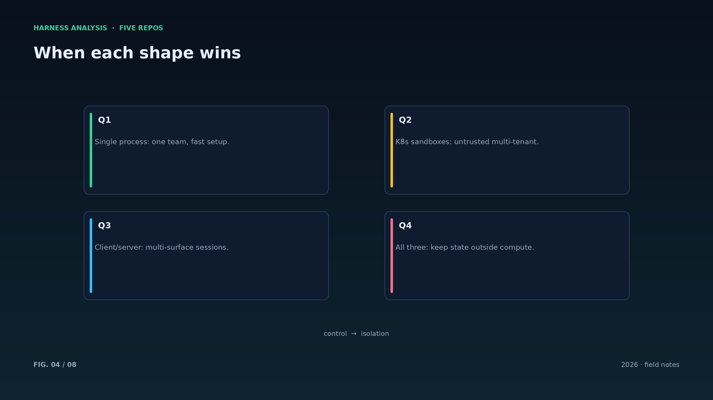
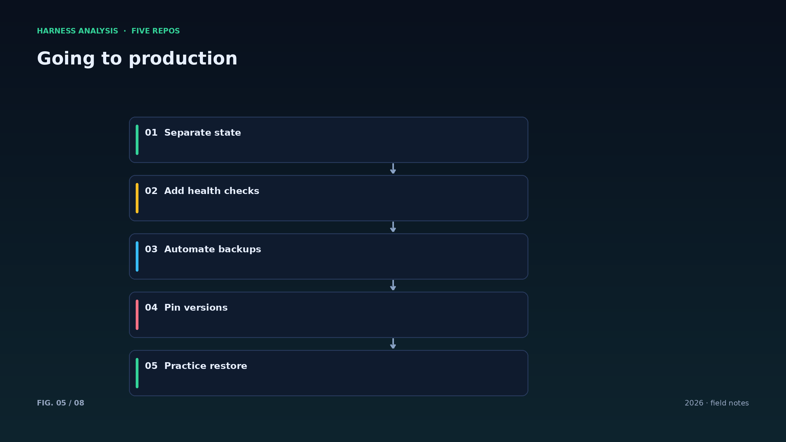
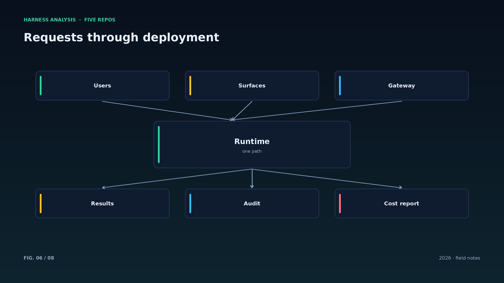
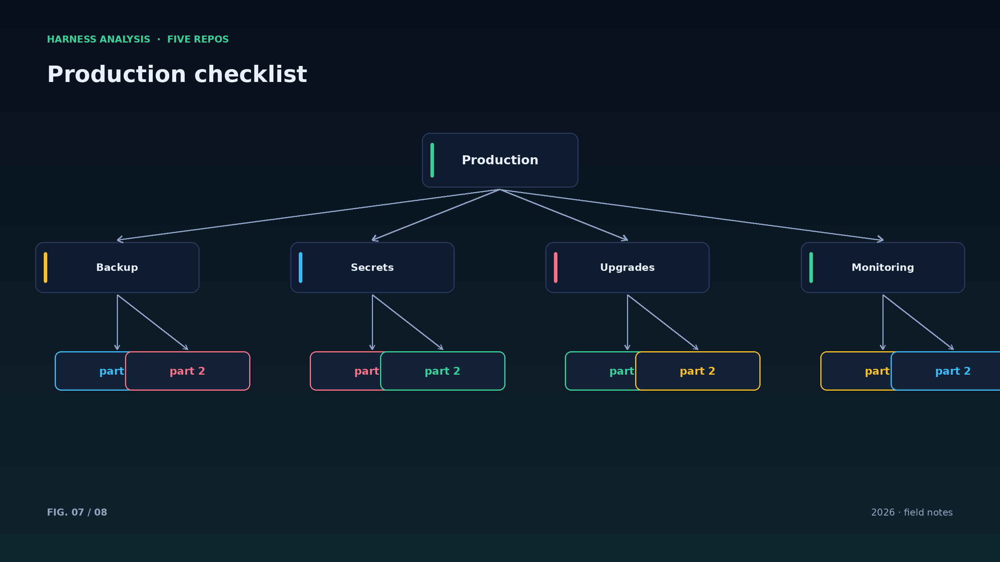
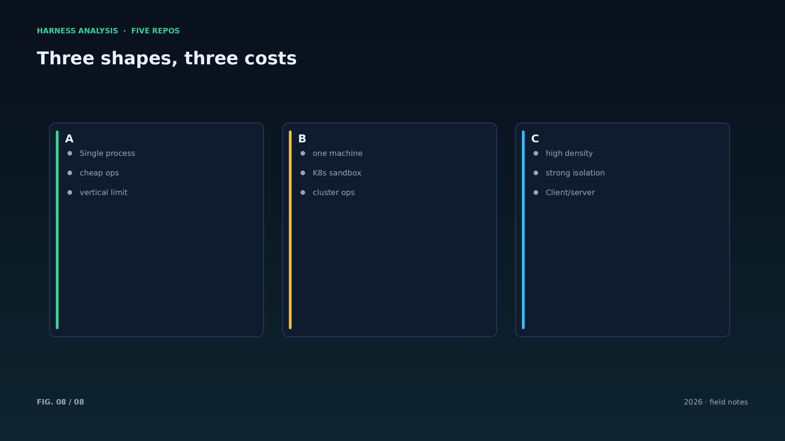

harness analysis · 11
三种部署形态：单进程、K8s 沙箱、Client/Server
Three Deployment Shapes: Single Process, K8s Sandboxes, Client/Server
部署形态决定了运维成本与安全边界。这一篇把三个项目的选择摆在一起，给出按规模选择的判断标准。
单进程（Octop）：一个进程承载 Web、IM、cron，状态落数据库，重启即恢复。适合家庭、小团队与内部工具，部署成本最低。超过一定并发后，纵向扩展的天花板会先到。
K8s 沙箱（Substrate）：每个 agent 一个沙箱，池化 worker，快照恢复。适合多租户、不可信代码执行与高密度场景。代价是一整套集群运维与安全策略的维护。
Client/server（opencode）：服务端持有会话，TUI、桌面、IDE 都是客户端。适合需要多端一致体验的编码 agent。代价是客户端分发与服务端状态管理。
选择标准可以更朴素：先问“谁在跑、跑在哪、能不能信任”。如果 agent 只服务一个团队、跑在自己机器上，单进程足够；如果 agent 互相不可信、共享集群，沙箱是底线；如果用户体验的核心是“在哪都能接着干”，client/server 是对的形状。
备份要演练：没恢复过的备份等于没有备份。至少每季度做一次从零恢复的演练，把 RTO 与 RPO 写下来，而不是只写在 PPT 里。
升级要可回滚：数据库 schema 迁移与镜像版本绑定，回滚脚本与升级脚本同时提交；生产事故大多死在“升得上去、退不下来”。
灰度发布对 harness 同样适用：先放 1% 流量到新版本，观察成功率与成本，再逐步放大。
密钥管理要可轮转：定期轮换、双密钥过渡、自动吊销，别让一个长期 token 成为单点。
运维手册要写给“凌晨三点的人”：一页纸的故障处置流程，比一百页的架构文档更能救火。
Architecture figures








ENGLISH
Three Deployment Shapes: Single Process, K8s Sandboxes, Client/Server
Deployment shape decides operations cost and security boundary. This piece lays out the three projects' choices and a scale-based way to pick.
Single process (Octop): Web, IM and cron in one process, state in a database, recovery by restart. Best for households, small teams and internal tools — the cheapest to operate, with a vertical-scaling ceiling.
K8s sandboxes (Substrate): one sandbox per agent, pooled workers, snapshot resume. Best for multi-tenant, untrusted-code and high-density settings. The price is a full cluster and security-policy operation.
Client/server (opencode): the server holds the session; TUI, desktop and IDE are clients. Best for coding agents that need a consistent multi-surface experience. The price is client distribution and server-side state.
The choice rule is simpler than it sounds: who runs it, where, and can you trust them? One team on its own machines warrants a single process; mutually untrusted agents on shared hardware demand sandboxes; if "continue anywhere" is the product, client/server is the right shape.
Rehearse backups: an untested backup is no backup. Run a from-scratch restore quarterly and write down RTO and RPO.
Canary releases apply to harnesses too: send one percent of traffic to the new version, watch success rate and cost, then widen.
Keys must rotate: scheduled rotation, dual-key transitions, automatic revocation. And write the runbook for the person on call at 3 a.m. — one page of recovery steps beats a hundred pages of architecture.